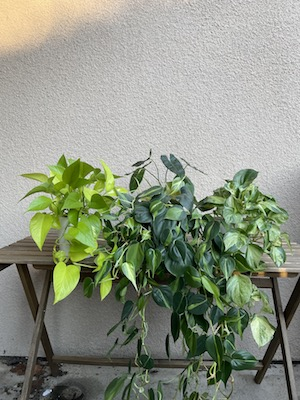

I find the image interesting because of how the light going through the tea makes it look like different colors/etc. Honestly, mostly chose this pic because it was ~aesthetic~. The rest of my pics are even more bland than this.
This pic is relevant to my collection because it is a cup of tea, and my collection is of tea from various places. This place in particular, RareTea, was my regular place to go when I was in Davis. Now that I'm back home, we do have a RareTea, but there are tons of other locations as well.
What does this say about me? Well, I like tea. Yea.

Anthony Chow, 2021(?)
From what I gather, this image shows a few of Anthony's plants. I am not knowledgable in the realm of flora but from what I observe, these plants may be of the same species(?) or are related in some sense, because they look similar. I like that they look similar but are different colors, that's a nice effect.
I am curious to learn more about these plants; perhaps what is their backstory? What kind of plant are they?
Learning Journal 3
I thought the article was pretty insightful; overall, it felt like an encouragement of critical thinking skills applied to visual analyzing. The website I found (from awwwards.com), Levon Aronian, was pretty interesting. It is very clearly grid-like (there are actual grid-like lines all across the page delineating where content lies), but also uses visual icons that break the grid structure.
On the home page, the rotating chess piece is very engaging. It appears to reflect “LEVON” and some grid lines. The about page has just pictures, which again fall within the grid lines, but also have interesting borders/cutouts. The fun page utilizes a variety of icons/images that appear above/outside of the grid, adding an element of dimension/variety. Overall, I thought that it was an interesting website that balanced simplicity with some unexpected elements.
Learning Journal 2
Viewing modals as annoying does make sense, most people don't enjoy the popups (ads, reminders, etc.). I also recall some annoyance with popups, remembering one time while playing a game getting a popup for some Adobe update or something, and this resulting in me dying in game (unfortunate, haha). I did find it interesting that they noted to "not use [modals] to show error, success or warning messages." I thought perhaps because considering people's annoyance at modals and instinct to ignore/immediately quit out of the popup would not be good for showing the user important information.
Their walkthrough of modal anatomy felt pretty comprehensive. The "escape hatch" makes sense, as you don't want your user stuck on the modal forever (well, maybe, but I highly doubt that's the goal usually). Again thinking of some popups I've had for notifications, some don't have the typical quit 'x' button at the top corner, but rather buttons like "yes, do the thing" or "oh, maybe later" or such. I suppose this is a good way to mitigate the instant quit instinct, by making your user have to consider what you want them to consider. Accessability is also important, and honestly something I don't know too much about.
A descriptive title helps your users know where they are at/why they are there, so that you don't just have a popup seemingly for no reason. Buttons were kind of discussed above; along with a title this helps one find their way around. The size should "not be too big or too small," which, wow, who'd have thought. Additionally, it should be located higher on the page (consider mobile). Adding a "lightbox effect" (darkening background) can help bring attention. Modals initiated by users will help avoid feeling like they've been sprung upon.
Mobile modals are more difficult, given the limited space. Accessibiity, again, means there should be keyboard accessible ways to access controls/etc.
Learning Journal 1
There were some things in this article that made sense, but I wouldn't have necessarily thought of myself. For example, number 5 mentions marking optional inputs rather than marking the mandatory fields. I've mostly seen the asterisks denoting mandatory info input, but that usually requires more fields to be marked than marking the optional one. I guess this could be an example of how design patterns change/improve over time.
Additionally, I thought the "never use a reset or clear button" tip was interesting. My first reaction was wondering how bad having a reset/clear button would be, and that having it wouldn't be a bad thing. However, the more I thought about it, the more I could see why they say "this button almost never helps users, but often hurts them." In most general/practical situations I could think of (eg. filling out a form), a reset button would indeed be unnecessary. However, I could see different circumstances where one might want to use a reset button (eg. something marketed for replayability or the like).